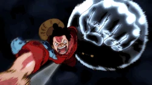
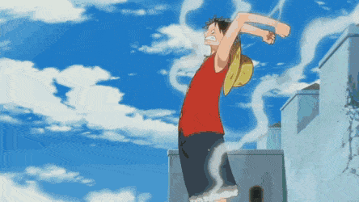

One Piece es la historia de un chico llamado Monkey D. Luffy, quién se inspiró en Shanks, un pirata que le salvó la vida, para convertirse en el Rey de los Piratas.
Al comienzo de la serie, veinticuatro años antes de la historia actual, un pirata llamado Gol D. Roger, conocido como el Rey de los Piratas , fue ejecutado, pero antes de su muerte, le dijo a la multitud de su tesoro, el One Piece.
Sus palabras desataron lo que sería conocida como «la Gran Era de la Piratería», innumerables piratas se dispusieron a buscar el tesoro causando grandes problemas al Gobierno Mundial.
Monkey D. Luffy se convierte en uno de ellos, deseando ser el próximo Rey de los Piratas y se dispone a reunir compañeros de tripulación y comenzar sus aventuras.
Poderes de luffy
Cuando tenía siete años, Luffy se comió involuntariamente la fruta Gomu Gomu, una fruta del diablo de tipo paramecia.
Esta le da su cuerpo las propiedades de la goma, lo que le permite estirarse, rebotar, doblarse, retorcerse e inflar cualquier parte de su cuerpo.
Al principio, Luffy era incapaz de controlar su estiramiento, pero fue capaz de dominarlo tras diez años de entrenamiento.

 